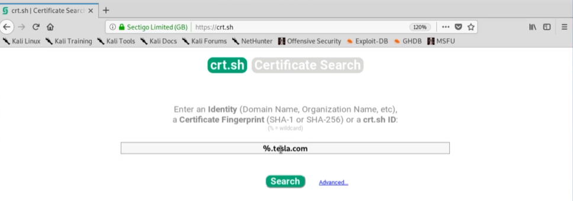

sublist3r is a Kali program - enumerates subdomains
------------------------------------------------------------------------------------------------------------------------------------------------------------
crt.sh website seems better -- (% means replace with random names to check)

---------------------------------------------------------------------------------------------------------------------------------------------------------------------------------------------------